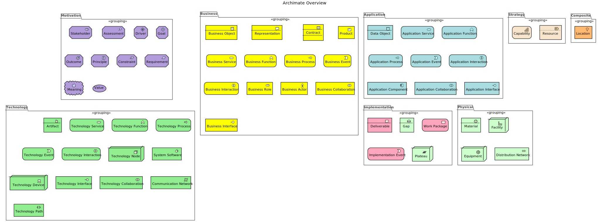
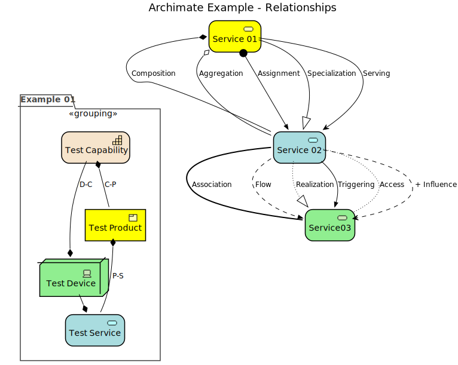

Some Notes about UML and PlantUml
I already posted about the set-up of plantuml here.
This is a very hand tool to manage complexity. In my new position complexity is all around and over me.
The system is big and you need to keep cold blood, strucutre and overview. I think this will be the main challange. In this sense the best way for me to operate will be to create good technical documentation of the system that I can always refer to.
Emacs is a very good friend in this sense. With all of the tags and
TODO, ISSUES workflow it will be possible for me to store the
general structure of the system and to keep a log and search across it
in order to manage such huge complexity.
Such tagged documentation in combination with the possibility to
export my notes in very readable html documents and the possibility
to write architectural diagrams via plantuml will be my big ally in
this in new challenge.
You can then store such html in blob stores and make them available
across the team.
Here some notes on resources you can refere to when writing your architectural diagrams and general documentation for your projects.
Find the official documentation here.
Why to use UML
References on PlantUML usage
How to make notes
note that it is nice that you can name notes and then reference notes by name as if they were objects.
this will facilitate the way you add notes to objects and you should work in that way.
note as Note
This is a server holding the general non-risk related DBs.
end note
Note .. OtherDBs
Interesting is that depening on the objects that use in plantuml you cannot make notes in the same way.
For instance if you write an activity diagram or a deployment diagram the way you write notes seems to be different.
The above works well for activity diagrams but does not seems to work in the deployment diagrams.
One to many, 0 to many etc. Relationships
These are important to understand and to include in order to write proper documentation.
Note that also when writing the documentation for relational tables a similar syntax applies. The team is working here with an application. Ask again to Johannes the name of it. I guess that there the same notation applies, in the sense that I noted that the one to many etc. symbols are comparable.
Such kind of relationships are especially important when making relational tables documentaions and in the field of class diagrams. In this sense you can use them in plantuml for writing down your class diagrams when writing your code and structuring it.
In any case, that said here are the following x-y relationships syntax that you have to use.

You can then check in the tool they are using and double check if the notation is the same. Basically the tool they are using for data modeling is a similar tool to Archi. You can essentially do very similar things as you are doing yourself with plantuml, with a nice drag and drop UI. Check at it and decide how you want to set-up your workflow in that dimension of documentation. Check as well if there is some standard to do that in plantuml and if that is convenient.
Archimate
Archi url. Good - there is as well the portable version that you can install on your working laptop.
Or some tools with UI. Check if you are quicker working with these
Yeah much easier to use. You can then export as png and copy it to your image file of interest and have it there in your documentation.
TODO when you have time. keep it org-calendar to remind that you have to check at it at some point
Check online the official documentation of Archimate from the opengroup.
Archimate-PlantUML
Note that I think that I will work with Archi and not with this integration. You quickly explored this integration and you discovered archi that way, so notes are here in the case you would want to check at it again at some later time-point.
This is convenient as you have a set of macros that allows you to easily write down the necessary diagrams by using a rather simple syntax via the defined macros and without to go into the low-level details of plantuml.
Check at it online on how to use that interface.
Moreover check at the following samples to understand what is possible to implement and how.
I report them here such that you will visualize them on the go when you will need them:
Archimate Elements
!includeurl https://raw.githubusercontent.com/ebbypeter/Archimate-PlantUML/master/Archimate.puml
title Archimate Example - Elements
'LAYOUT_AS_SKETCH
'LAYOUT_LEFT_RIGHT
'LAYOUT_TOP_DOWN
Strategy_Resource(SR_01, "Resource")
Strategy_Capability(SC_01, "Capability")
Strategy_CourseOfAction("SA_01", "Course of Action")
Business_Actor(BA_01, "Business Actor")
Business_Role(BR_01, "Business Role")
Business_Collaboration(BC_01, "Business Collaboration")
Business_Interface(BI_01, "Business Interface")
Business_Process(BP_01, "Business Process")
Business_Function(BF_01, "Business Function")
Business_Interaction(BIt_01, "Business Interaction")
Business_Event(BE_01, "Business Event")
Business_Service(BS_01, "Business Service")
Business_Object(BO_01, "Business Object")
Business_Contract(BCt_01, "Contract")
Business_Representation(BRep_01, "Representation")
Business_Product(BPr_01, "Product")
Application_Component(AC_01, "Application Component")
Application_Collaboration(ACol_01, "Application Collaboration")
Application_Interface(AI_01, "Application Interface")
Application_Function(AF_01, "Applcation Function")
Application_Interaction(AInt_01, "Application Interaction")
Application_Process(AP_01, "Application Process")
Application_Event(AE_01, "Application Event")
Application_Service(AS_01, "Application Service")
Application_DataObject(AD_01, "Data Object")
Technology_Node(TN_01, "Node")
Technology_Device(TD_01, "Device")
Technology_SystemSoftware(TSS_01, "System Software")
Technology_Collaboration(TC_01, "Technology Collaboration")
Technology_Interface(TI_01, "Technology Interface")
Technology_Path(TP_01, "Path")
Technology_CommunicationNetwork(TCN_01, "Communication Network")
Technology_Function(TF_01, "Technology Function")
Technology_Process(TPr_01, "Technology Process")
Technology_Interaction(TInt_01, "Technology Interaction")
Technology_Event(TE_01, "Technology Event")
Technology_Service(TS_01, "Technology Service")
Technology_Artifact(TA_01, "Artifact")
'Physical Elements
Physical_Equipment(PE_01, "Equipment")
Physical_Facility(PF_01, "Facility")
Physical_DistributionNetwork(PDN_01, "Distribution Network")
Physical_Material(PM_01, "Material")
Motivation_Stakeholder(MS_01, "Stakeholder")
Motivation_Driver(MD_01, "Driver")
Motivation_Assessment(MA_01, "Assessment")
Motivation_Goal(MG_01, "Goal")
Motivation_Outcome(MO_01, "Outcome")
Motivation_Principle(MP_01, "Principle")
Motivation_Requirement(MR_01, "Requirement")
Motivation_Constraint(MC_01, "Constraint")
Motivation_Meaning(MM_01, "Meaning")
Motivation_Value(MV_01, "Value with some longer text\nand multiline\nand more")
'Implementation Elements
Implementation_WorkPackage(IWP_01, "Work Package")
Implementation_Deliverable(ID_01, "Deliverable")
Implementation_Event(IE_01, "Event")
Implementation_Plateau(IP_01, "Plateau")
Implementation_Gap(IG_01, "Gap")
'Other Elements
Grouping(G_01, "Grouping") {
Junction_Or(JO_01, "or")
Junction_And(JA_01, "and")
}
Group(G_02, "Group") {
Other_Location(OL_01, "Location")
}

Internet Browser
!includeurl https://raw.githubusercontent.com/ebbypeter/Archimate-PlantUML/master/Archimate.puml
title Archimate Sample - Internet Browser
'LAYOUT_AS_SKETCH
'LAYOUT_LEFT_RIGHT
'LAYOUT_TOP_DOWN
Business_Object(businessObject, "A Business Object")
Business_Process(someBusinessProcess,"Some Business Process")
Business_Service(itSupportService, "IT Support for Business (Application Service)")
Application_DataObject(dataObject, "Web Page Data \n 'on the fly'")
Application_Function(webpageBehaviour, "Web page behaviour")
Application_Component(ActivePartWebPage, "Active Part of the web page \n 'on the fly'")
Technology_Artifact(inMemoryItem,"in memory / 'on the fly' html/javascript")
Technology_Service(internetBrowser, "Internet Browser Generic & Plugin")
Technology_Service(internetBrowserPlugin, "Some Internet Browser Plugin")
Technology_Service(webServer, "Some web server")
Rel_Flow_Left(someBusinessProcess, businessObject, "")
Rel_Serving_Up(itSupportService, someBusinessProcess, "")
Rel_Specialization_Up(webpageBehaviour, itSupportService, "")
Rel_Flow_Right(dataObject, webpageBehaviour, "")
Rel_Specialization_Up(dataObject, businessObject, "")
Rel_Assignment_Left(ActivePartWebPage, webpageBehaviour, "")
Rel_Specialization_Up(inMemoryItem, dataObject, "")
Rel_Realization_Up(inMemoryItem, ActivePartWebPage, "")
Rel_Specialization_Right(inMemoryItem,internetBrowser, "")
Rel_Serving_Up(internetBrowser, webpageBehaviour, "")
Rel_Serving_Up(internetBrowserPlugin, webpageBehaviour, "")
Rel_Aggregation_Right(internetBrowser, internetBrowserPlugin, "")
Rel_Access_Up(webServer, inMemoryItem, "")
Rel_Serving_Up(webServer, internetBrowser, "")

Archimate Overview
!includeurl https://raw.githubusercontent.com/ebbypeter/Archimate-PlantUML/master/Archimate.puml
title Archimate Overview
'LAYOUT_AS_SKETCH
'LAYOUT_LEFT_RIGHT
'LAYOUT_TOP_DOWN
Grouping(M_Group,"Motivation"){
Motivation_Stakeholder(MStakeholder, "Stakeholder")
Motivation_Assessment(MAssessment, "Assessment")
Motivation_Driver(MDriver, "Driver")
Motivation_Goal(MGoal, "Goal")
Motivation_Outcome(MOutcome,"Outcome")
Motivation_Principle(MPrinciple,"Principle")
Motivation_Constraint(MConstraint,"Constraint")
Motivation_Requirement(MRequirement,"Requirement")
Motivation_Meaning(MMeaning,"Meaning")
Motivation_Value(MValue,"Value")
}
Grouping(B_Group,"Business"){
Business_Object(BObject, "Business Object")
Business_Representation(BRepresentation, "Representation")
Business_Contract(BContract, "Contract")
Business_Product(BProduct, "Product")
Business_Service(BService, "Business Service")
Business_Function(BFunction, "Business Function")
Business_Process(BProcess, "Business Process")
Business_Event(BEvent, "Business Event")
Business_Interaction(BInteraction, "Business Interaction")
Business_Role(BRole,"Business Role")
Business_Actor(BActor,"Business Actor")
Business_Collaboration(BCollaboration, "Business Collaboration")
Business_Interface(BInterface, "Business Interface")
}
Grouping(A_Group, "Application"){
Application_DataObject(ADataObject, "Data Object")
Application_Service(AService,"Application Service")
Application_Function(AFunction, "Application Function")
Application_Process(AProcess, "Application Process")
Application_Event(AEvent, "Application Event")
Application_Interaction(AInteraction, "Application Interaction")
Application_Component(AComponent, "Application Component")
Application_Collaboration(ACollaboration, "Application Collaboration")
Application_Interface(AInterface, "Application Interface")
}
Grouping(T_Group, "Technology"){
Technology_Artifact(TArtifact, "Artifact")
Technology_Service(TService, "Technology Service")
Technology_Function(TFunction, "Technology Function")
Technology_Process(TProcess, "Technology Process")
Technology_Event(TEvent, "Technology Event")
Technology_Interaction(TInteraction, "Technology Interaction")
Technology_Node(TNode, "Technology Node")
Technology_SystemSoftware(TSystemSoftware, "System Software")
Technology_Device(TDevice,"Technology Device")
Technology_Interface(TInterface, "Technology Interface")
Technology_Collaboration(TCollaboration, "Technology Collaboration")
Technology_CommunicationNetwork(TCommunicationNetwork, "Communication Network")
Technology_Path(TPath, "Technology Path")
}
Grouping(I_Group, "Implementation"){
Implementation_Deliverable(IDeliverable, "Deliverable")
Implementation_Gap(IGap, "Gap")
Implementation_WorkPackage(IWorkPackage, "Work Package")
Implementation_Event(IEvent, "Implementation Event")
Implementation_Plateau(IPlateau,"Plateau")
}
Grouping(S_Group,"Strategy"){
Strategy_Resource(SResource,"Resource")
Strategy_Capability(SCapability,"Capability")
}
Grouping(C_Group, "Composite"){
Other_Location(CLocation,"Location")
}
Grouping(P_Group, "Physical"){
Physical_Material(PMaterial, "Material")
Physical_Facility(PFacility, "Facility")
Physical_Equipment(PEquipment, "Equipment")
Physical_DistributionNetwork(PDistributionNetwork, "Distribution Network")
}

Archimate Relationships
!includeurl https://raw.githubusercontent.com/ebbypeter/Archimate-PlantUML/master/Archimate.puml
title Archimate Example - Relationships
'LAYOUT_AS_SKETCH
'LAYOUT_LEFT_RIGHT
'LAYOUT_TOP_DOWN
Business_Service(Service01, "Service 01")
Application_Service(Service02, "Service 02")
Technology_Service(Service03, "Service03")
Rel_Composition_Right(Service01, Service02, "Composition")
Rel_Aggregation(Service01, Service02, "Aggregation")
Rel_Assignment(Service01, Service02, "Assignment")
Rel_Specialization(Service01, Service02, "Specialization")
Rel_Serving(Service01, Service02, "Serving")
Rel_Association(Service02, Service03, "Association")
Rel_Flow(Service02, Service03, "Flow")
Rel_Realization(Service02, Service03, "Realization")
Rel_Triggering(Service02, Service03, "Triggering")
Rel_Access(Service02, Service03, "Access")
Rel_Influence(Service02, Service03, " + Influence")
Grouping(Example01, "Example 01"){
Strategy_Capability(TestCapability01, "Test Capability")
Business_Product(TestProduct01, "Test Product")
Application_Service(TestService01, "Test Service")
Technology_Device(TestDevice01, "Test Device")
Rel_Composition(TestCapability01, TestProduct01, "C-P")
Rel_Composition_Down(TestProduct01, TestService01, "P-S")
Rel_Composition_Left(TestService01, TestDevice01, "S-D")
Rel_Composition_Up(TestDevice01, TestCapability01, "D-C")
}
Lay_D(Service01, Example01)

Archimate Sample
!includeurl https://raw.githubusercontent.com/ebbypeter/Archimate-PlantUML/master/Archimate.puml
title Archimate Sample - Requirement & Application Services
Motivation_Requirement(ReqPayrollStandard, "Do Payroll with a standard system")
Motivation_Requirement(ReqBudgetPlanning, "Do budget planning within the ERP system")
Application_Service(ASPayroll,"Payroll Service")
Application_Service(ASBudgetPlanning,"Budget Planning Service")
Application_Component(ACSAPFinanceAccRec, "SAP Finance - Accounts Recievables")
Application_Component(ACSAPHR, "SAP Human Resources")
Application_Component(ACSAPFin, "SAP Finance")
Application_Component(ACSAP,"SAP")
Rel_Realization_Up(ASPayroll, ReqPayrollStandard)
Rel_Realization_Up(ASBudgetPlanning, ReqBudgetPlanning)
Rel_Realization_Up(ACSAPFinanceAccRec, ASBudgetPlanning)
Rel_Realization_Up(ACSAPHR, ASPayroll)
Rel_Composition_Up(ACSAPFin, ACSAPFinanceAccRec)
Rel_Composition_Up(ACSAP, ACSAPHR)
Rel_Composition_Up(ACSAP, ACSAPFin)